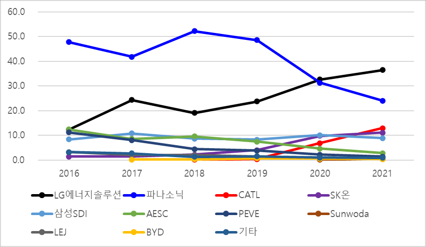
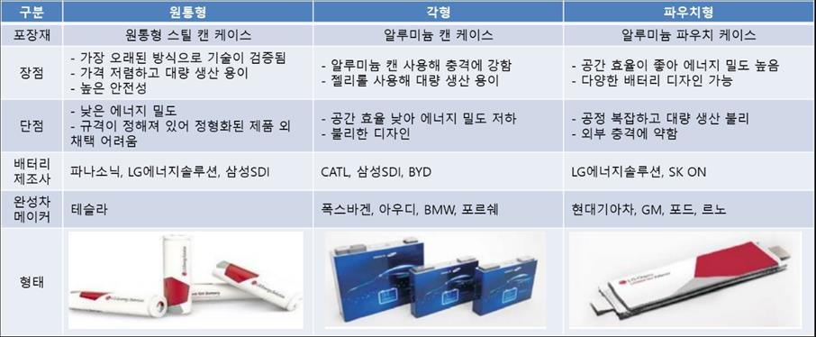
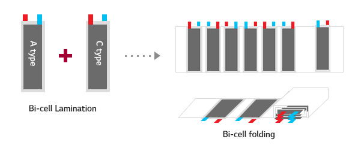
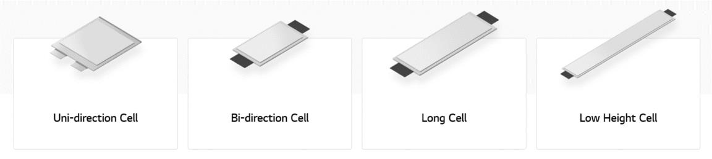

In 2020 LG Energy Solution took the top share of the global EV battery market outside China. This case study analyses the value chain and architecture of the EV battery industry along with LG Energy Solution's catch-up strategy and its pouch battery technology, drawing out the factors that allowed a latecomer in lithium-ion batteries to reach first place in the global EV battery market outside China.
- Carbon-neutrality policies adopted worldwide in response to climate change are expanding the market for eco-friendly vehicles including EVs, and in 2020 LG Energy Solution took the top share of the global EV battery market outside China.
- This case study analyses how LG Energy Solution, a latecomer in the lithium-ion battery market, reached first place by share in the global EV battery market outside China.
- The analysis covers the value chain and architecture of the EV battery industry together with LG Energy Solution's catch-up strategy and its pouch battery technology.
- Developing a differentiated pouch-type battery, the fit of that battery with EV battery architecture, and securing appropriability through patents on its proprietary lamination manufacturing technology emerged as the key factors behind its successful catch-up.
Chapter 1. Introduction — carbon neutrality grows the EV battery market
Since the 2015 Paris Agreement, carbon-neutrality policies around the world have been expanding the market for eco-friendly vehicles including EVs. As the market shifts from internal combustion to electric vehicles, the core components and competitive factors for carmakers have changed too. Where the core components of an internal combustion vehicle were the engine and transmission, in an EV the core component is the battery, which determines performance such as driving range and safety and accounts for 30–40% of production cost. The global EV battery market more than doubled from USD 15 billion in 2016 to USD 38.8 billion in 2019 and is expected to reach USD 93.94 billion by 2026; as of 2020 lithium-ion batteries held the largest share by type at 83.32%.
In the EV battery market outside China, Japan's Panasonic — previously the share leader — was overtaken by LG Energy Solution in 2020, and the gap widened further in 2021. By country, market share is shifting from Japan to Korea.

Chapter 2. Theoretical background — lithium-ion batteries and architecture theory
2-1 History, types and manufacturing of lithium-ion batteries
Development of lithium-based batteries began at NASA in 1960; in 1980 Goodenough and colleagues developed LCO (lithium cobalt oxide), a cathode material with high energy density; and in 1991 Japan's Sony first commercialised the lithium-ion battery. Korean firms entered later, with LG Chem beginning volume production in 1999 and Samsung SDI in 2000, while China's CATL was spun off from ATL in 2011. From 2011 lithium-ion batteries began to be applied in EVs, and by 2015 EVs had overtaken consumer electronics as the largest share of the lithium-ion battery market.
Lithium-ion batteries divide by form into cylindrical, prismatic and pouch types. Cylindrical cells use proven, inexpensive technology and are easy to mass-produce, but have lower energy density and fixed dimensions. Prismatic cells resist external impact well and suit mass production, but have low space efficiency. Pouch cells offer good space efficiency, so they can achieve high energy density and can be made in a variety of shapes, but their processes are complex, which is a disadvantage for mass production.

2-2 Architecture theory
Ulrich (1995) classified product architecture into modular architecture, where product functions map one-to-one onto components, and integral architecture, where they form complex relationships. Shibata et al. (2005) distinguished open from closed architectures by the extent to which component interfaces are standardised, and Fujimoto (2002, 2007) proposed a matrix of four types considering the architecture of both the component maker and the firm that buys and uses the component (Integral/Modular Inside – Integral/Modular Outside).
Chapter 3. Research model and case analysis
3-2 EV battery industry analysis — Integral Inside, Closed Modular Outside
The battery performance an EV requires — price, life, fast charging, energy density, output and safety — is realised through the combined action of components such as cathode, anode, separator and electrolyte, and the manufacturing process is likewise a highly integrated one running from electrode slurry production through assembly to electrolyte filling. The internal architecture of an EV battery is therefore integral. Major carmakers, meanwhile, are developing dedicated EV platforms applicable across all segments and modularising and standardising battery systems to achieve economies of scale, so the external architecture is modular. EV batteries are standardised within a given company but cannot be used by another firm in the industry, making the architecture closed.
3-3 LG Energy Solution case analysis — catching up through differentiation
LG Energy Solution was established on 1 December 2020 through a physical spin-off from LG Chem; as of 2021 it recorded revenue of about KRW 17.85 trillion and operating profit of about KRW 770 billion with 27,623 employees. Lithium-ion battery research began at what was then Lucky Metals in 1992 and got under way in earnest when a research organisation was created at LG Chem in 1996, leading to volume production of cylindrical lithium-ion cells just three years later in 1999. When the Toyota Prius, the world's first hybrid vehicle, launched in 1997, the company judged that energy and environmental issues would remain a lasting concern and began automotive battery research in 2000; in 2009 it succeeded in becoming the sole supplier of lithium-ion batteries to the GM Volt, the world's first mass-produced EV.
Cylindrical and prismatic cells are made by winding the materials into a roll, while pouch cells are made by stacking materials in layers. Even among pouch makers, SK On uses Z-stacking, cutting cathode and anode into single sheets and stacking them alternately with the separator, whereas LG Energy Solution uses its proprietary lamination technology to first make a bi-cell combining electrode and separator, then either folds it (stack and folding) or stacks it (lamination and stacking). Z-stacking reduces the chance of contact between electrodes and so lowers explosion risk, but the process is complex and production is slow; the lamination process is relatively simple and allows higher production speed. In 2009 LG Energy Solution succeeded in developing a pouch battery using its proprietary lamination technology and began volume production.

Chapter 4. Findings — why LG Energy Solution's catch-up succeeded
4-1 Fit with EV battery architecture
Energy density. Driving range is the most important consideration for consumers buying an EV, and batteries have been developed toward higher energy density accordingly — energy density in 2020 was nearly three times the 2010 level. Wound cylindrical and prismatic cells have curvature by construction, and the resulting complex mechanical stresses such as bending stress limit how far electrode loading and thickness can be increased. Stacked pouch cells, by contrast, build electrodes upward with no bending stress and minimise dead space inside the cell, giving them an advantage in raising energy density.
Productivity. High battery prices are holding back EV adoption, and carmakers are demanding lower prices. Pouch cells are inherently more difficult and costly to produce than cylindrical or prismatic cells, but LG Energy Solution overcame this by raising production speed with lamination technology, gaining an advantage in capacity and economies of scale over the Z-stacking approach.
Design variety. Given an Integral Inside–Closed Modular Outside architecture, it matters that a battery maker can serve the many carmakers each building their own EV platform. Unlike cylindrical and prismatic cells with fixed dimensions and designs, pouch cells can be designed in a variety of shapes, and LG Energy Solution developed and supplied batteries in whatever form each EV maker required.

4-2 Securing appropriability in manufacturing technology
Analysis of the patent citation network in battery manufacturing technology from 1970 to 2022 shows that patents on pouch battery manufacturing (stacking, lamination) form a distinct cluster within the network, that LG Energy Solution's patents make up most of that cluster, and that they show high forward citation counts. As of 2022 LG Energy Solution holds the largest share of pouch battery manufacturing patents at 43%, followed by Samsung at 12%. Among the ten most-cited patents, six are LG's (US6709785 with 77 citations, US6726733 with 61, US6881514 with 53 and others), indicating that the company has secured appropriability in pouch battery manufacturing technology.
Pouch cells trailed cylindrical cells in EV installations until 2019 but have been installed more often than cylindrical cells since 2020, and eight of the twelve major EV manufacturers use pouch batteries. In this market, LG Energy Solution has succeeded in serving multiple carmakers on the strength of the pouch manufacturing technology it secured, and is building partnerships with them.
- Catch-up through differentiation: To catch the Japanese incumbents, LG Energy Solution chose differentiation over price competition backed by capital, developing pouch batteries rather than following the prevailing winding method.
- Architectural fit: With high energy density and design variety, the pouch battery suited the Integral Inside–Closed Modular Outside architecture of an EV battery industry in which suppliers must serve carmakers each running their own dedicated platform.
- Securing appropriability: Offsetting the pouch cell's slow production speed with proprietary lamination technology, and securing appropriability over that manufacturing technology through patents, was the key to a successful catch-up. With pouch demand now rising and effectively only LG Energy Solution able to meet it, continued growth is expected.
- Limitations: This study addressed only pouch battery development as a success factor. Further research is needed on how the materials capability of LG Energy Solution — which began as a chemicals company and developed the world's first batteries using NCM 811 and NCMA cathodes as well as ceramic-coated separators — affected its catch-up.